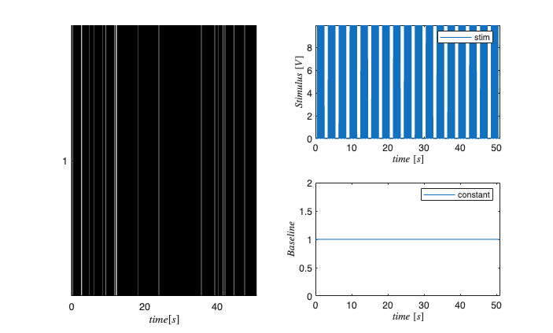
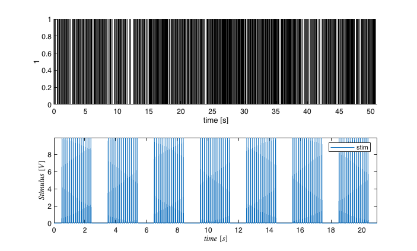
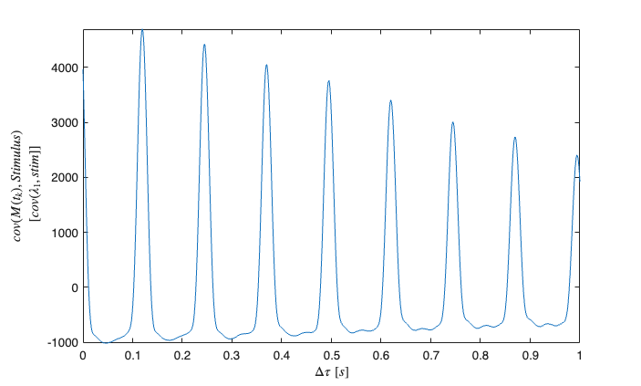
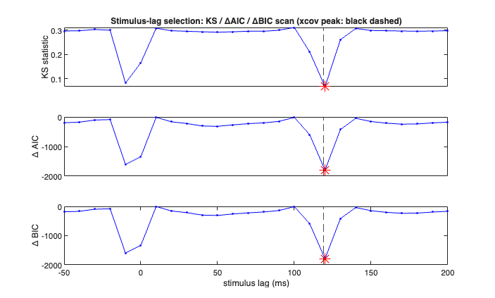
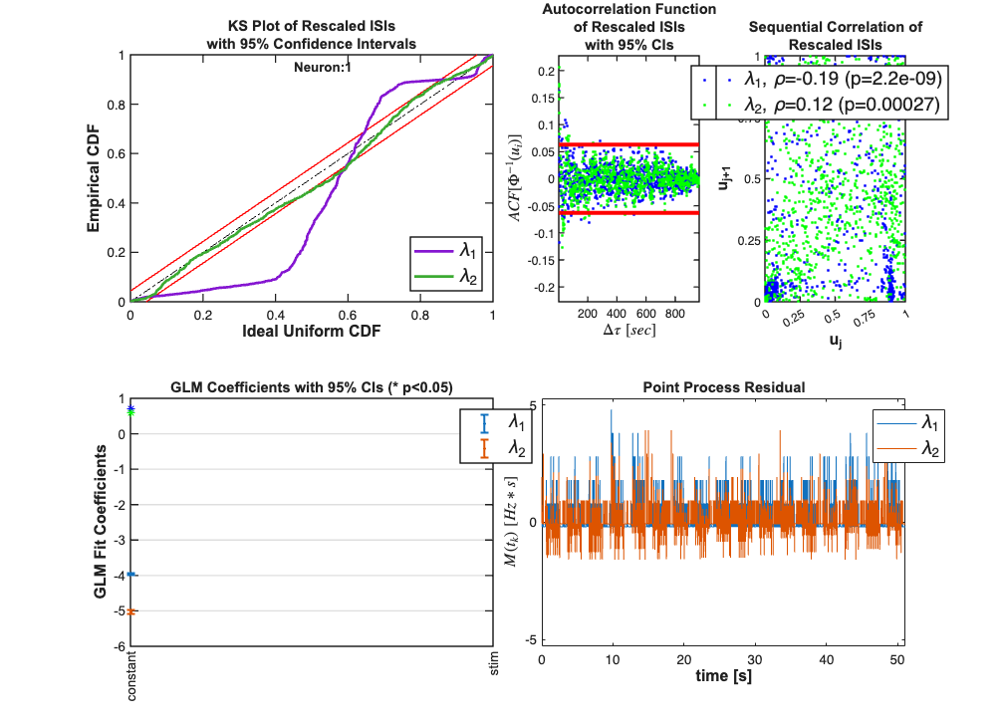
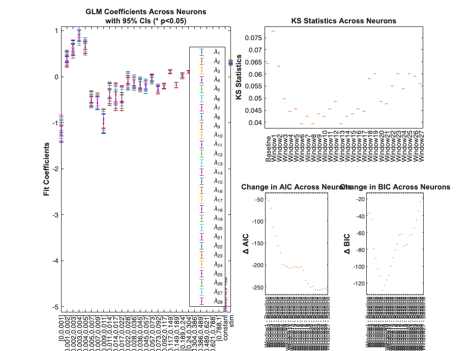
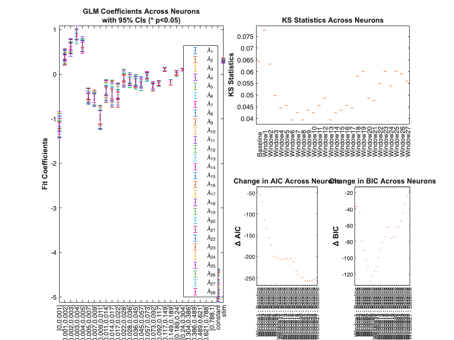
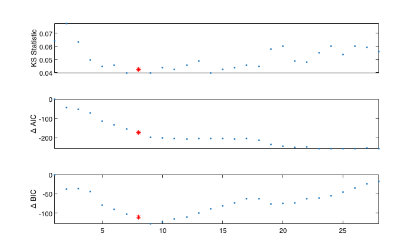
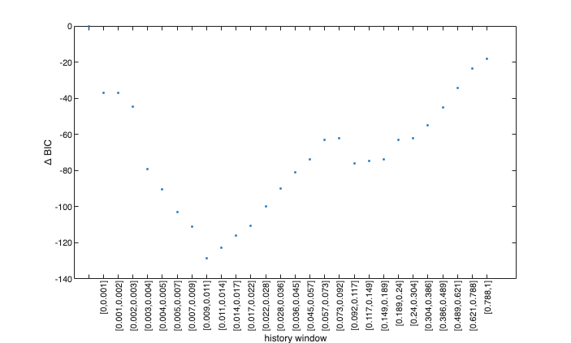
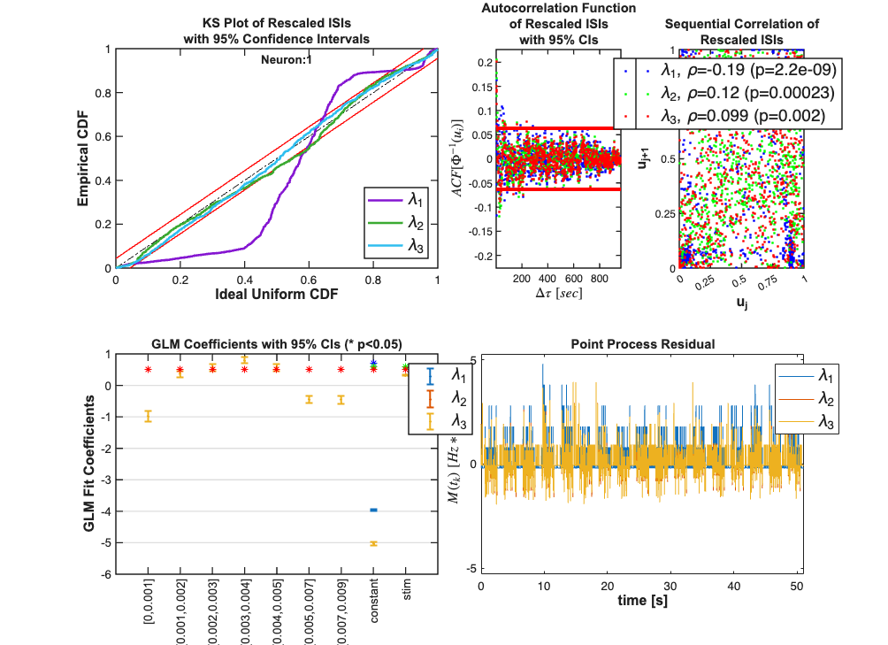

EXPLICIT STIMULUS EXAMPLE - WHISKER STIMULATION/THALAMIC NEURON
In the worksheet with analyze the stimulus effect and history effect on the firing of a thalamic neuron under a known stimulus consisting of whisker stimulation. Data from Demba Ba (demba@mit.edu)
Contents
Load the data
close all; close all; [~,~,explicitStimulusDir] = getPaperDataDirs(); Direction=3; Neuron=1; Stim=2; datapath = fullfile(explicitStimulusDir,strcat('Dir', num2str(Direction)),... strcat('Neuron', num2str(Neuron)), strcat('Stim', num2str(Stim))); data=load(fullfile(datapath,'trngdataBis.mat')); time=0:.001:(length(data.t)-1)*.001; stimData = data.t; spikeTimes = time(data.y==1); stim = Covariate(time,stimData,'Stimulus','time','s','V',{'stim'}); baseline = Covariate(time,ones(length(time),1),'Baseline','time','s','',... {'constant'}); nst = nspikeTrain(spikeTimes); nspikeColl = nstColl(nst); cc = CovColl({stim,baseline}); trial = Trial(nspikeColl,cc); trial.plot; figure; subplot(2,1,1); nst2 = nspikeTrain(spikeTimes); nst2.setMaxTime(21);nst.plot; subplot(2,1,2); stim.getSigInTimeWindow(0,21).plot;


Fit a constant baseline and Find Stimulus Lag
close all; % We fit a constant rate (Poisson) model to the data and use the fit % residual to determine the appropriate lag for the stimulus. clear c; selfHist = [] ; NeighborHist = []; sampleRate = 1000; c{1} = TrialConfig({{'Baseline','constant'}},sampleRate,selfHist,NeighborHist); c{1}.setName('Baseline'); cfgColl= ConfigColl(c); results = Analysis.RunAnalysisForAllNeurons(trial,cfgColl,0); % Find Stimulus Lag (look for peaks in the cross-covariance function less % than 1 second figure; results.Residual.xcov(stim).windowedSignal([0,1]).plot; [m,ind,ShiftTime] = max(results.Residual.xcov(stim).windowedSignal([0,1])); %Allow for shifts of less than 1 second stim = Covariate(time,stimData,'Stimulus','time','s','V',{'stim'}); stim = stim.shift(ShiftTime); baseline = Covariate(time,ones(length(time),1),'Baseline','time','s','',... {'constant'}); nst = nspikeTrain(spikeTimes); nspikeColl = nstColl(nst); cc = CovColl({stim,baseline}); trial = Trial(nspikeColl,cc);
Analyzing Configuration #1: Neuron #1

Stimulus-lag model-selection scan: KS / DeltaAIC / DeltaBIC (issue #83)
close all; % Alternative to the xcov-peak heuristic above: scan candidate stimulus % lags and pick the one that minimizes the KS statistic / DeltaAIC / % DeltaBIC. Same pattern HistoryExamples uses for history-lag selection. % The xcov-chosen ShiftTime is overlaid as a black dashed reference. candidateLags = -0.05:0.01:0.20; % seconds (-50ms past .. +200ms future) ks_scan = nan(size(candidateLags)); dAIC_scan = nan(size(candidateLags)); dBIC_scan = nan(size(candidateLags)); % FIX (#83 / PR #103): nstColl, nspikeTrain, and Trial are all handle % classes. The scan below mints fresh Trial objects per iteration but % must NOT reuse the outer `nspikeColl` -- Analysis.RunAnalysisForAllNeurons % calls setTrialTimesFor + setMaxTime/setMinTime which propagate through % the shared spike-collection handle, polluting the original `trial` and % breaking the downstream computeHistLagForAll concat at % Trial.getDesignMatrix:481. Mint isolated nspikeColls for the reference % and per-lag fits. nspikeColl_scan = nstColl(nspikeTrain(spikeTimes)); % Baseline-only reference fit for AIC/BIC deltas cRef = TrialConfig({{'Baseline','constant'}},sampleRate,[],[]); cRef.setName('BaselineRef'); trialRef = Trial(nspikeColl_scan, CovColl({baseline})); resRef = Analysis.RunAnalysisForAllNeurons(trialRef, ConfigColl({cRef}), 0); % FIX (#102 / #103): RunAnalysisForAllNeurons returns a FitResult OBJECT % for the single-neuron / single-config case, not a cell. AICref = resRef.AIC; BICref = resRef.BIC; for j = 1:length(candidateLags) nspikeColl_j = nstColl(nspikeTrain(spikeTimes)); % fresh handle per iter stim_j = Covariate(time, stimData, 'Stimulus','time','s','V',{'stim'}); stim_j = stim_j.shift(candidateLags(j)); trial_j = Trial(nspikeColl_j, CovColl({stim_j, baseline})); cSc = TrialConfig({{'Baseline','constant'},{'Stimulus','stim'}}, sampleRate, [], []); cSc.setName(sprintf('lag=%.3gs', candidateLags(j))); rj = Analysis.RunAnalysisForAllNeurons(trial_j, ConfigColl({cSc}), 0); ks_scan(j) = rj.KSStats.ks_stat; dAIC_scan(j) = rj.AIC - AICref; dBIC_scan(j) = rj.BIC - BICref; end [~, bestIdx] = min(ks_scan); figure; subplot(3,1,1); plot(candidateLags*1000, ks_scan, 'b.-'); hold on; plot(candidateLags(bestIdx)*1000, ks_scan(bestIdx), 'r*','MarkerSize',12); xline(ShiftTime*1000, 'k--'); ylabel('KS statistic'); set(gca,'xtick',[]); title('Stimulus-lag selection: KS / \DeltaAIC / \DeltaBIC scan (xcov peak: black dashed)'); subplot(3,1,2); plot(candidateLags*1000, dAIC_scan, 'b.-'); hold on; plot(candidateLags(bestIdx)*1000, dAIC_scan(bestIdx), 'r*','MarkerSize',12); xline(ShiftTime*1000, 'k--'); ylabel('\Delta AIC'); set(gca,'xtick',[]); subplot(3,1,3); plot(candidateLags*1000, dBIC_scan, 'b.-'); hold on; plot(candidateLags(bestIdx)*1000, dBIC_scan(bestIdx), 'r*','MarkerSize',12); xline(ShiftTime*1000, 'k--'); ylabel('\Delta BIC'); xlabel('stimulus lag (ms)');
Analyzing Configuration #1: Neuron #1 Analyzing Configuration #1: Neuron #1 Analyzing Configuration #1: Neuron #1 Analyzing Configuration #1: Neuron #1 Analyzing Configuration #1: Neuron #1 Analyzing Configuration #1: Neuron #1 Analyzing Configuration #1: Neuron #1 Analyzing Configuration #1: Neuron #1 Analyzing Configuration #1: Neuron #1 Analyzing Configuration #1: Neuron #1 Analyzing Configuration #1: Neuron #1 Analyzing Configuration #1: Neuron #1 Analyzing Configuration #1: Neuron #1 Analyzing Configuration #1: Neuron #1 Analyzing Configuration #1: Neuron #1 Analyzing Configuration #1: Neuron #1 Analyzing Configuration #1: Neuron #1 Analyzing Configuration #1: Neuron #1 Analyzing Configuration #1: Neuron #1 Analyzing Configuration #1: Neuron #1 Analyzing Configuration #1: Neuron #1 Analyzing Configuration #1: Neuron #1 Analyzing Configuration #1: Neuron #1 Analyzing Configuration #1: Neuron #1 Analyzing Configuration #1: Neuron #1 Analyzing Configuration #1: Neuron #1 Analyzing Configuration #1: Neuron #1

Compare constant rate model with model including stimulus effect
close all; % Addition of the stimulus improves the fits in terms of the KS plot and % the making the rescaled ISIs less correlated. The Point Process Residula % also looks more "white" clear c; selfHist = [] ; NeighborHist = []; sampleRate = 1000; c{1} = TrialConfig({{'Baseline','constant'}},sampleRate,selfHist,... NeighborHist); c{1}.setName('Baseline'); c{2} = TrialConfig({{'Baseline','constant'},{'Stimulus','stim'}},... sampleRate,selfHist,NeighborHist); c{2}.setName('Baseline+Stimulus'); cfgColl= ConfigColl(c); results = Analysis.RunAnalysisForAllNeurons(trial,cfgColl,0); results.plotResults;
Analyzing Configuration #1: Neuron #1 Analyzing Configuration #2: Neuron #1

History Effect
close all; % Determine the best history effect model using AIC, BIC, and KS statistic sampleRate=1000; delta=1/sampleRate*1; maxWindow=1; numWindows=30; windowTimes =unique(round([0 logspace(log10(delta),... log10(maxWindow),numWindows)]*sampleRate)./sampleRate); results =Analysis.computeHistLagForAll(trial,windowTimes,... {{'Baseline','constant'},{'Stimulus','stim'}},'BNLRCG',0,sampleRate,0); KSind = find(results{1}.KSStats.ks_stat == min(results{1}.KSStats.ks_stat)); AICind = find((results{1}.AIC(2:end)-results{1}.AIC(1))== ... min(results{1}.AIC(2:end)-results{1}.AIC(1))); BICind = find((results{1}.BIC(2:end)-results{1}.BIC(1))== ... min(results{1}.BIC(2:end)-results{1}.BIC(1))); if(AICind==1) AICind=inf; end if(BICind==1) BICind=inf; %sometime BIC is non-decreasing and the index would be 1 end windowIndex = min([KSind,AICind,BICind]) %use the minimum order model Summary = FitResSummary(results); Summary.plotSummary; clear c; if(windowIndex>1) selfHist = windowTimes(1:windowIndex); else selfHist = []; end NeighborHist = []; sampleRate = 1000;
Analyzing Configuration #1: Neuron #1
Analyzing Configuration #2: Neuron #1
Analyzing Configuration #3: Neuron #1
Analyzing Configuration #4: Neuron #1
Analyzing Configuration #5: Neuron #1
Analyzing Configuration #6: Neuron #1
Analyzing Configuration #7: Neuron #1
Analyzing Configuration #8: Neuron #1
Analyzing Configuration #9: Neuron #1
Analyzing Configuration #10: Neuron #1
Analyzing Configuration #11: Neuron #1
Analyzing Configuration #12: Neuron #1
Analyzing Configuration #13: Neuron #1
Analyzing Configuration #14: Neuron #1
Analyzing Configuration #15: Neuron #1
Analyzing Configuration #16: Neuron #1
Analyzing Configuration #17: Neuron #1
Analyzing Configuration #18: Neuron #1
Analyzing Configuration #19: Neuron #1
Analyzing Configuration #20: Neuron #1
Analyzing Configuration #21: Neuron #1
Analyzing Configuration #22: Neuron #1
Analyzing Configuration #23: Neuron #1
Analyzing Configuration #24: Neuron #1
Analyzing Configuration #25: Neuron #1
Analyzing Configuration #26: Neuron #1
Analyzing Configuration #27: Neuron #1
Analyzing Configuration #28: Neuron #1
windowIndex =
8

figure;
x=1:length(windowTimes);
subplot(3,1,1); plot(x,results{1}.KSStats.ks_stat,'.'); axis tight; hold on;
plot(x(windowIndex),results{1}.KSStats.ks_stat(windowIndex),'r*');
set(gca,'xtick',[]);
ylabel('KS Statistic');
dAIC = results{1}.AIC-results{1}.AIC(1);
subplot(3,1,2); plot(x,dAIC,'.');
set(gca,'xtick',[]);
ylabel('\Delta AIC');axis tight; hold on;
plot(x(windowIndex),dAIC(windowIndex),'r*');
dBIC = results{1}.BIC-results{1}.BIC(1);
subplot(3,1,3); plot(x,dBIC,'.');
ylabel('\Delta BIC'); axis tight; hold on;
plot(x(windowIndex),dBIC(windowIndex),'r*');
for i=2:length(x)
histLabels{i} = ['[' num2str(windowTimes(i-1),3) ',' num2str(windowTimes(i),3) ,']'];
end
figure;
plot(x,dBIC,'.');
ylabel('\Delta BIC'); xlabel('history window');
xticks = 1:(length(histLabels));
set(gca,'xtick',xticks,'xtickLabel',histLabels,'FontSize',6);
% FIX (#102): xticklabel_rotate is a File Exchange helper that
% manipulates the figure's Position/axes in a way publish() renders as
% near-blank. xtickangle is the R2014b+ built-in equivalent.
xtickangle(90);
set(gca,'FontSize',8);



Compare Baseline, Baseline+Stimulus Model, Baseline+History+Stimulus
close all; % Addition of the history effect yields a model that falls within the 95% % CI of the KS plot. c{1} = TrialConfig({{'Baseline','constant'}},sampleRate,[],NeighborHist); c{1}.setName('Baseline'); c{2} = TrialConfig({{'Baseline','constant'},{'Stimulus','stim'}},... sampleRate,[],[]); c{2}.setName('Baseline+Stimulus'); c{3} = TrialConfig({{'Baseline','constant'},{'Stimulus','stim'}},... sampleRate,windowTimes(1:windowIndex),[]); c{3}.setName('Baseline+Stimulus+Hist'); cfgColl= ConfigColl(c); results = Analysis.RunAnalysisForAllNeurons(trial,cfgColl,0); results.plotResults;
Analyzing Configuration #1: Neuron #1 Analyzing Configuration #2: Neuron #1 Analyzing Configuration #3: Neuron #1
